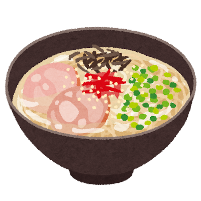
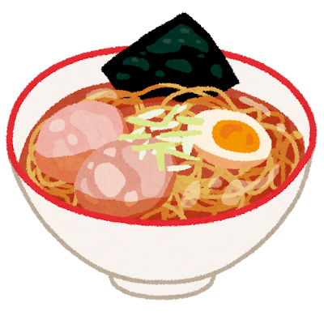
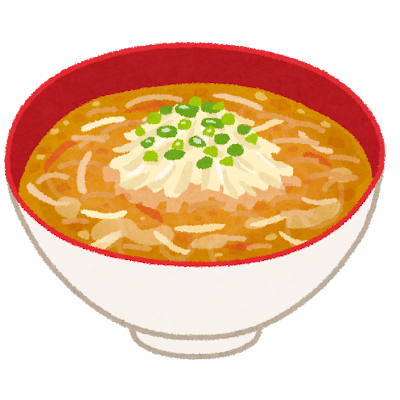
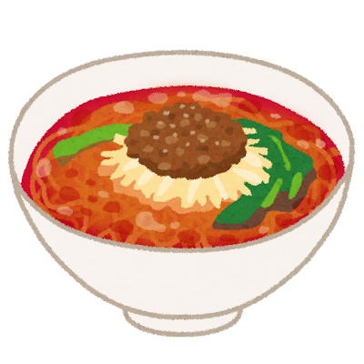

Ramen: Japan’s Soul in a Bowl

From China to Japan
Ramen arrived in Japan through Chinese immigrants in the late 19th and early 20th centuries. The dish was originally called shina soba (Chinese soba) and was sold from street carts in port cities like Yokohama and Kobe. After World War II, cheap American wheat flour flooded the market, and ramen stalls multiplied across the country.
In 1958, Momofuku Ando invented instant ramen — a product that would become one of Japan s greatest exports. But it was the regional ramen shops, each perfecting their own style, that turned ramen into a culinary pilgrimage.
The Four Pillars
Every bowl of ramen is built on four elements: broth (the soul), tare (seasoning), noodles (the body), and toppings (the personality). The broth alone can take 12 to 48 hours to prepare, with bones simmered until they release every ounce of flavor.
Regional Styles
Tonkotsu (豚骨) — Fukuoka
Rich, creamy, milky-white pork bone broth simmered for up to 20 hours. The collagen-heavy soup coats your lips. Hakata-style tonkotsu uses thin, straight noodles and simple toppings — chashu pork, green onion, and pickled ginger.

Shoyu (醤油) — Tokyo
The original Tokyo style: a clear, brown soy sauce-based broth built on chicken and sometimes fish stock. Lighter than tonkotsu but deeply savory, with curly noodles and classic toppings of chashu, menma (bamboo shoots), nori, and a seasoned egg.

Miso (味噌) — Sapporo
Born in Hokkaido to fight the bitter cold, miso ramen features a robust, warming broth enriched with fermented soybean paste. It is hearty, slightly sweet, and often topped with corn, butter, and bean sprouts — ingredients from Hokkaido s dairy and agricultural heritage.

Tantanmen (担々麺)
Japan s take on Sichuan dan dan noodles — a spicy, sesame-rich broth with ground pork and chili oil. It represents the beautiful cross-pollination between Chinese and Japanese culinary traditions.

A bowl of ramen tells you where you are in Japan. Every city, every shop, every chef has their own answer to the same question: what does comfort taste like?